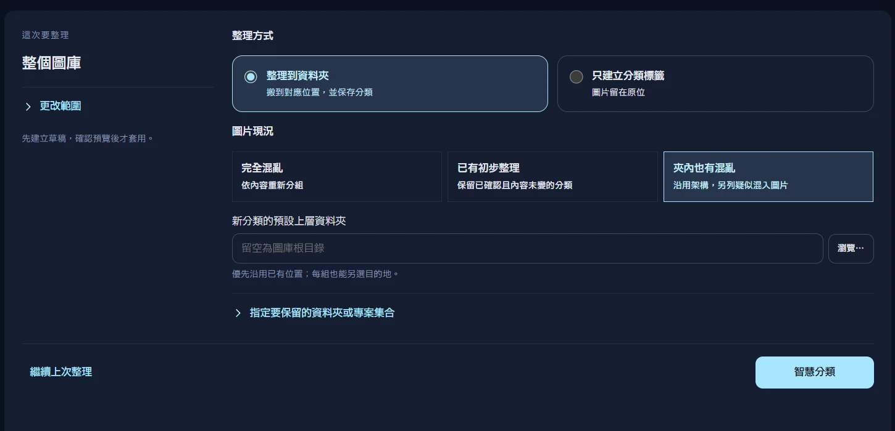
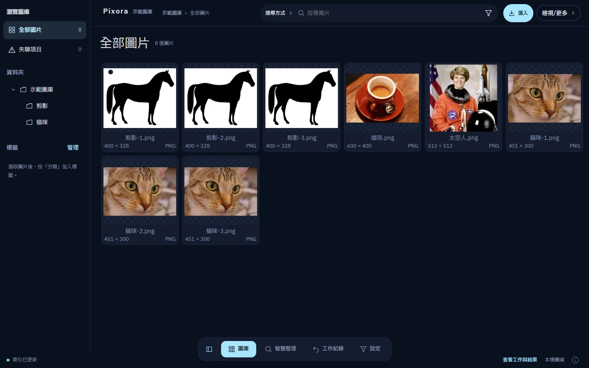
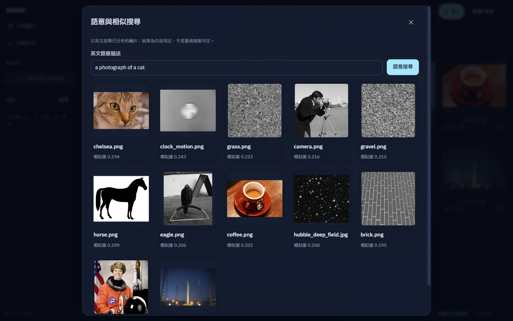
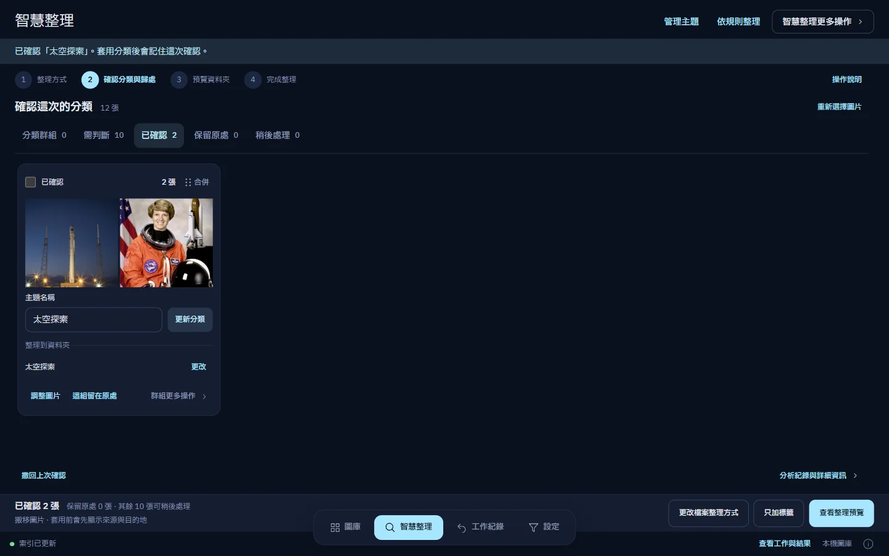
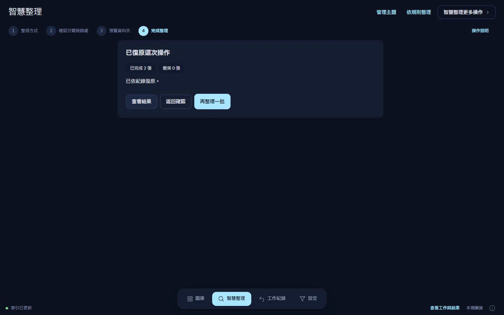
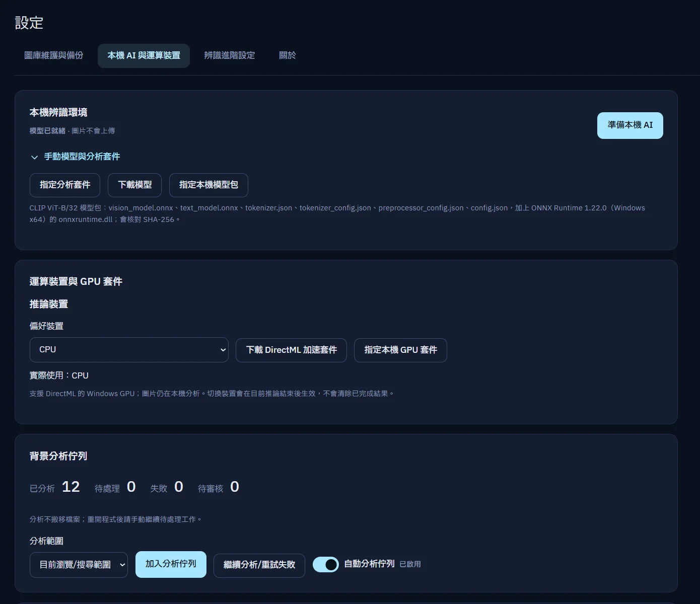
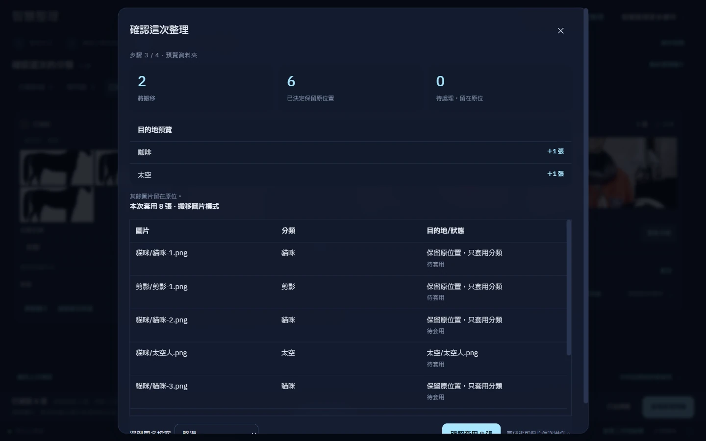
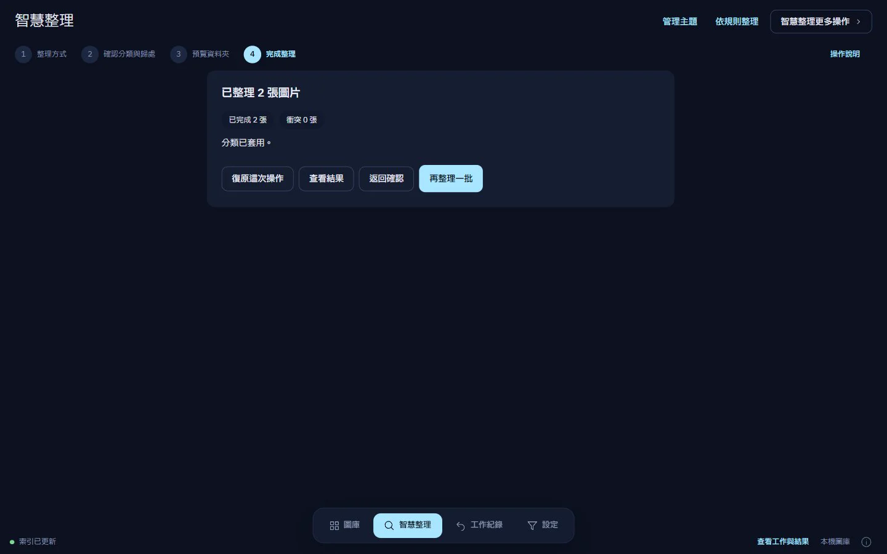

01 / 04
決定整理的範圍與方式
選擇要整理的圖片、資料夾與保留集合。可以整理到資料夾，也可以只建立分類標籤。


PIXORA / WINDOWS · LOCAL AI
記得畫面，卻想不起檔名？
用本機 AI 找回圖片，審核分類，再整理到真正的資料夾。圖片留在你的電腦，決定權也一樣。
Windows x64 · 已測試 Windows 11 · GPU 選配

本機運算圖片不需上傳做推論
真實資料夾不把原圖鎖進封閉容器
你來確認先審核、預覽，再套用
63 秒 / 真實桌面操作
12 張示範圖片，真實本機推論。從語意搜尋、人工審核到搬移與復原，一氣呵成。
a photograph of a cat，顯示本機語意搜尋結果。01 / 從找圖到歸檔
瀏覽、搜尋、整理、復原，連成一條由你掌握的工作流程。
開啟既有資料夾，或建立新的圖庫。用標籤、收藏與星等建立另一種秩序，不必搬動原圖。
需要調整位置時，搬移與改名會真正作用於磁碟檔案。
先準備模型、將圖片加入背景分析佇列並等待完成，再在「搜尋方式」選語意搜尋，輸入英文描述，例如 a photograph of a cat。也能從圖片資訊尋找相似圖片。
一般文字搜尋比對檔名與相對路徑。

審核群組、命名分類、指定目的地。不確定的圖片留待判斷，不必為了完成整理而勉強分類。
「已確認」仍是等待套用；先看逐檔預覽，才會實際整理。

智慧整理保留跨重啟的操作紀錄，可從「最近操作」復原。檔案狀態不符或原位置被占用時，列出衝突而不是任意覆寫。
一般搬移／改名的 Ctrl+Z 僅限本次工作階段；刪除請到 Windows 回收筒。復原不等於原圖備份。

02 / 第一次使用
先備份原圖，用少量圖片熟悉流程。基本瀏覽不需準備 AI。
安裝版選 *-setup.exe；免安裝版選 *-portable.zip，完整解壓並保留 analysis 資料夾，再開啟 Pixora.exe。不需另裝 Python、Rust 或 Node.js。
只索引你登錄的圖庫，原圖留在所選資料夾。雙擊圖片可預覽；標籤不改變檔案位置。
v0.3.7 的入口是「設定 → 本機 AI 與運算裝置」。第一次下載模型需要網路，備齊後可離線推論。GPU 加速是選配，無 GPU 也可使用 CPU。
若要語意／相似圖片搜尋，在同頁「背景分析佇列」選範圍，按「加入分析佇列」，等待完成再搜尋。模型就緒不代表圖片已完成分析；背景分析不搬檔。

智慧整理 / 四步導覽
以下是畫面導覽，不會在網頁執行 AI 或變更檔案。
選擇要整理的圖片、資料夾與保留集合。可以整理到資料夾，也可以只建立分類標籤。

審核群組、調整命名與目的地，再明確確認。不確定的內容可稍後處理；這一步不會搬動檔案。
核對搬移數量、保留原處的圖片及逐檔目的地。只加標籤也先預覽；確認實際影響後才套用。


03 / ENGINEERING · 給想看更深一層的你
工程的重點不只在找到相似圖片，也在本機資源、可追溯狀態與檔案安全之間取得平衡。
React／TypeScript 呈現桌面介面，Rust 協調檔案、資料庫與推論。內容雜湊搭配模型／前處理版本識別快取，避免誤用舊特徵。
預覽計畫綁定版本；操作前核對，操作後留存日誌。復原遇到檔案變更或目的地衝突時保留現況，回報原因。
04 / 常見問題
圖片不會上傳做 AI 推論。第一次下載模型與選用的 GPU 套件需要網路；模型備齊後可離線推論。這個產品網站也不提供上傳、不執行 AI，沒有追蹤腳本。
可以使用 CPU，GPU／DirectML 加速為選配。需要 Windows x64 與 WebView2 Runtime，已測試 Windows 11。不需另裝 Python、Rust 或 Node.js；免安裝版務必完整解壓縮並保留 analysis 資料夾。
目前請使用英文描述，例如 a photograph of a cat。搜尋前，請先在設定的「背景分析佇列」加入圖片並等待分析完成；只下載模型還不夠。一般文字搜尋仍可比對檔名與相對路徑。
會。搬移與改名作用於真實資料夾；單純標籤、收藏和星等不改變位置。智慧整理先審核、預覽，經確認套用後才執行。請先備份原圖並用小範圍測試。
一般搬移／改名的 Ctrl+Z 僅限本次工作階段；智慧整理的復原紀錄可跨程式重啟，遇到變更或衝突會停止覆寫。刪除請從 Windows 回收筒還原。
「設定 → 圖庫維護與備份」匯出的是管理資料，不包含原始圖片，也不能替代原圖備份或完整的操作復原紀錄。
請確認檔案來自此公開下載儲存庫的 Releases，核對版本及警示內容，不要停用安全保護。可到 Issues 提供版本、重現步驟與錯誤訊息；截圖與紀錄請先遮蔽私人圖片、路徑及個人資訊。
開始整理 / 保留你的掌控權
先選一個已備份的資料夾，讓 Pixora 陪你理出頭緒。
安裝版 *-setup.exe / 免安裝版 *-portable.zip
說明與畫面已核對 v0.3.7；下載連結前往最新發行版。
本站畫面與影片來自 v0.3.7 同版本的隔離測試建置，內嵌 production 前端並以 CDP 擷取，非未發行的新介面。以真實 CPU 推論展示 12 張不同圖片；智慧整理初步結果皆需人工判斷，由人選取太空人與火箭確認「太空探索」，並非宣稱自動分類成功。實際搬移並復原 2 個檔案，以 SHA-256 核對內容與位置。這是小型操作示範，不是辨識準確率 benchmark，也不是百萬張真實圖片的端到端驗收；操作復原不能替代原圖備份。查看擷取紀錄、逐張來源授權與驗證。
12 張示範素材重用 scikit-image data v0.25.2 的 CC0／公有領域圖片，涵蓋動物、咖啡、攝影師、太空人、火箭、星系、時鐘與材質；未以複製或裁切變體增加數量。Pixora 品牌圖像使用提供的原始素材。
歷史核心量測（2026-09-17）以 512 維合成向量量測 100 萬筆「ANN 搜尋 + SQLite ID lookup」，不含模型推論與 UI；Recall@50 是對精確向量搜尋的召回率，不是圖片分類正確率，也不是實際百萬圖片應用的驗證。完整百萬張真實圖片的端到端產品效能驗收尚未完成。檢視量測 JSON。
量測環境：Windows 11 · Ryzen 7 9800X3D · 約 32 GiB RAM · 4 threads · 200 queries
示範影片字幕可另行下載：繁體中文字幕（VTT）。